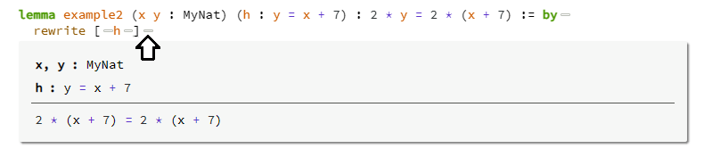

import TutorialWorld.Level1
import TutorialWorld.Level2
import TutorialWorld.Level3
import TutorialWorld.Level4
The Natural Numbers
This sample is based on the Natural Number Game by Kevin Buzzard and Mohammad Pedramfar.
This sample provides the same content in a book format that is designed to be read online or run in your local Visual Studio Code with the Lean4 "extension". The extension will install the Lean4 compiler and language service for you so it is easy to setup - see the Quick Start for more information.
You must open the NaturalNumbers folder in Visual Studio Code using `File/Open folder" in order
for it to function correctly.
How to use this sample
When reading this content in a web browser the code samples are annotated with type information and you can see the proof tactic state by hovering your mouse over these little bubbles:

When viewing this content in Visual Studio Code you will find this tactic state information in the Lean extension "Info View" panel.
This sample is organized into sections called "worlds" and each section has a sequential set of learning levels. The idea is that you should work through the worlds and levels in order. Each level has a description of the goal and a set of tasks to complete.
In this sample you will not use the built in support for natural numbers in Lean because that would
be too easy. You will start from scratch defining your own new type called MyNat. Your version of
the natural numbers will satisfy something called the principle of mathematical induction, and a
couple of other things too (Peano's axioms). Since you are starting from scratch, you will have to
prove all the basic theorems about your numbers like x + y = y + x and so on. This is your job.
You're going to prove mathematical theorems using the Lean theorem prover.
You're going to prove these theorems using tactics. The introductory world, Tutorial World, will
take you through some of these tactics. During your proofs, your "goal" (i.e. what you're supposed
to be proving) will be displayed in the Visual Studio Code InfoView with a ⊢ symbol in front of
it. If the InfoView says "Goals accomplished 🎉", you have closed all the goals in the level
and can move on to the next level in the world you're in.
You are now ready to dive into Tutorial World: Level 1.
There is also an "online" version under development that works with Lean 4, see https://github.com/PatrickMassot/NNG4.
If you want to see the original "Lean 3" game version of this content, go to https://github.com/ImperialCollegeLondon/natural_number_game which is also hosted in this online version.